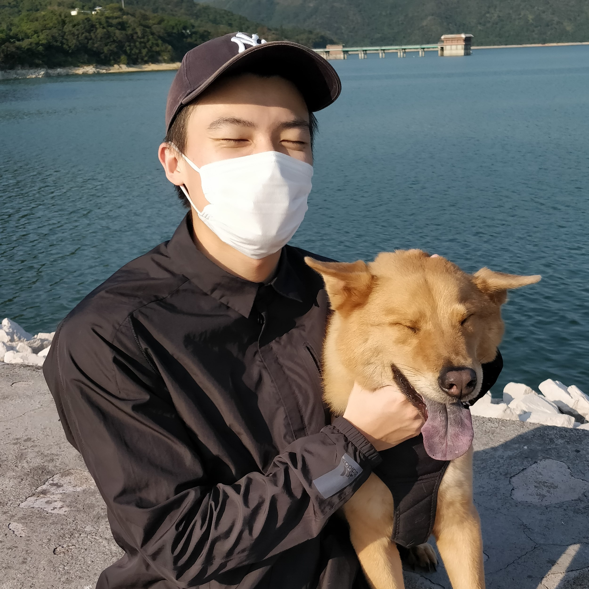

Mr. Lui Chung Hin, Ryan

Summary
I am a Business Analyst with 3+ years experience with system development projects in accounting and e-commerce industry
Education
- 2021 February: Chartered Financial Analyst – Passed Level I (CFA Institute)
- 2015 September-2019 December: City University of Hong Kong, Bachelor of Business Administration
- 2018 January-June: Loughborough University Exchange Program
Working Experience
2022 July-Current: Consultant, Varmeego Limited
- Business Analyst role in ecommerce revamp project for A.S. Watson Group
- Document requirements, business know-how and functional design
- Work with development and UI/UX team to define system design and user journey
- Work with quality assurance team on test case design and execution
- Conduct user training and prepare training materials
- Address technical concerns and change requests with business user
2020 April-2022: July Business Analyst, FlexSystem Limited
- Manage system implementation projects for different clients:
- Design project schedule and specific tasks
- System installation and environment setup
- Conduct user training and write user manual
- Customer support
- Meet with potential clients and introduce suitable solutions
- Acquire client’s system requirements and evaluate client’s business practices
- Coordinate with developers on system development and UX/UI design
- Product acceptance and functional testing
Skills
- Microsoft Office
- SAP Commerce Cloud (Administration Cockpit, SmartEdit)
- Atlassian Confluence, Jira
Other